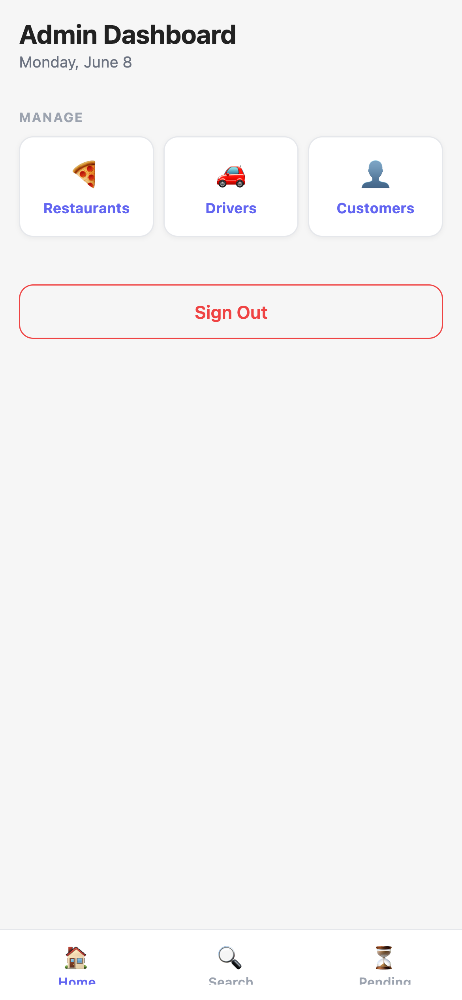
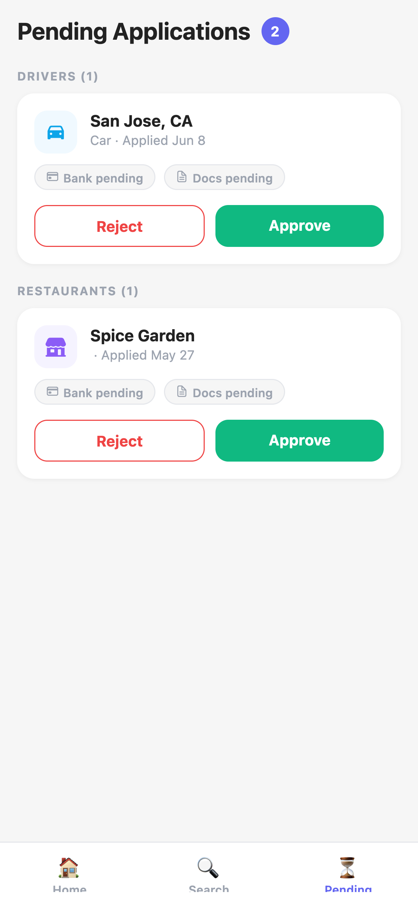
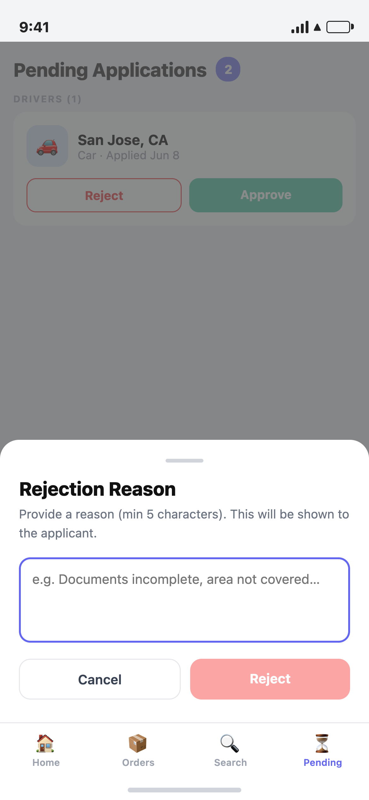
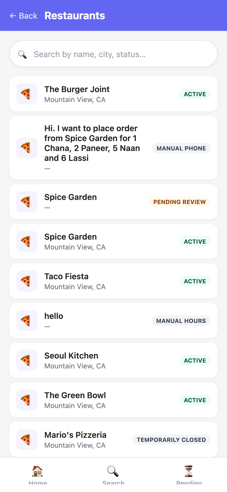
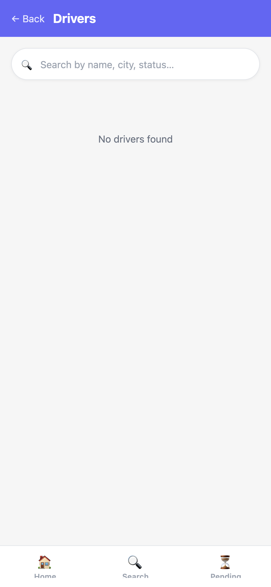
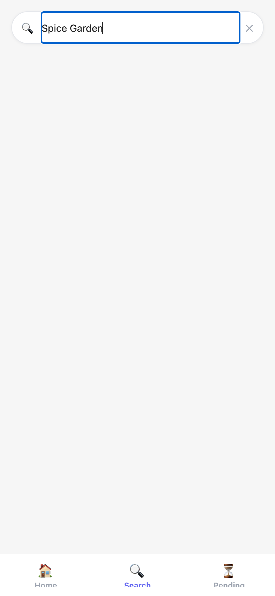
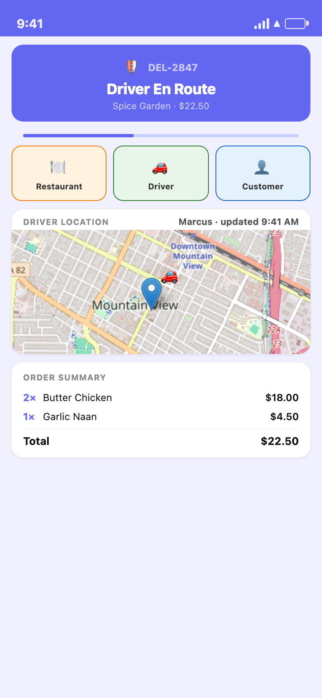
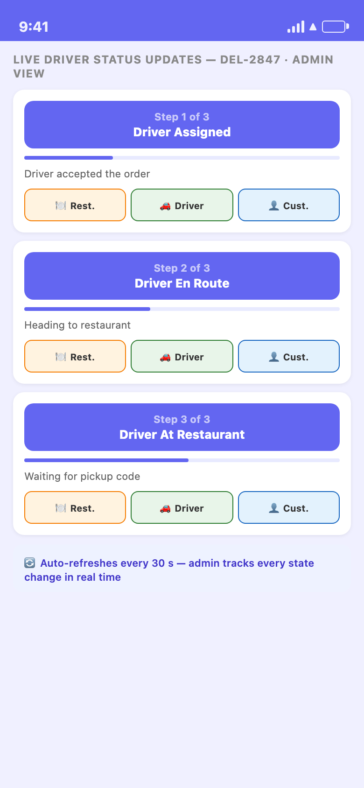

⚙️
Admin App
DeliverOS · Platform operations & oversight
Real Screenshots
Live Platform Data
Full Audit Trail
Full platform visibility in one place — approve restaurants and drivers, reject with a typed reason that's stored on the record, monitor live order flow, search across all users, and intervene on any order state. Every action leaves an audit trail. Operators run the entire marketplace without touching a database.
Key Admin Workflows — What an Operator Actually Does
Onboarding
📝 Application
→
🔍 Review
→
✅ Approve
/
❌ Reject + Reason
Operations
🔍 Search
→
📋 Inspect
→
🔧 Intervene
Admin App Screens — Real Screenshots from the Running App
1

Platform Dashboard
GMV, order counts, pending approvals, active restaurants and drivers, cancellation and refund rates. One glance tells an operator if the platform is healthy.
Home
2

Pending Approvals
All new restaurant and driver applications in one queue. Cards show Stripe Identity status, bank verification, and docs submitted.
Pending
3

Reject with Reason
Tapping Reject opens a modal to type a reason. The reason is stored on the record and sent to the applicant — full paper trail for every decision.
Reject Flow
4

All Restaurants
Searchable list of every restaurant on the platform — active, pending, and paused. Tap any row to view profile, edit details, or change status.
Restaurants
5

All Drivers
Full driver roster with status badges: Active, Pending review, Suspended. Each driver's city, vehicle type, and onboarding stage visible at a glance.
Drivers
6

Platform Search
Search across restaurants, drivers, and customers by name, city, or ID. Results link directly to profile pages for instant inspection.
Search
Order Intervention — Live Driver Tracking & Direct Calls
7

One-tap Calls — Restaurant, Driver, Customer
Every order exposes three call buttons. Tapping any one dials through the platform's masked bridge — admin sees the decrypted number; neither party sees the other's real number.
Order Detail
8

Live Driver Status Updates
The order detail polls every 30 seconds. As the driver moves through DriverAssigned → DriverEnRoute → DriverAtRestaurant, the banner, progress bar, and map update automatically — no refresh needed.
Real-time
FullPlatform Visibility
ApproveRestaurants & Drivers
OverrideAny Order State
SearchAll Users & Orders
AuditEvery Admin Action
10Background Jobs
Key Jobs to Be Done — What an Operator Actually Does
👥 Onboarding & Trust
- Review new restaurant and driver applications
- Check Stripe Identity verification status
- Verify bank account & Stripe Connect linked
- Approve or reject — rejection reason stored and sent
- Bypass Stripe Identity for known partners (demo mode)
- Review and activate T&C document versions
📦 Order & Dispute Management
- Call restaurant, driver, or customer directly from any order
- Track driver live — location map refreshes every 30 s
- Override handover if pickup code is lost
- Manually advance stuck orders in any state
- Initiate full or partial Stripe refunds
- Resolve disputes — unlock escrow or release payout
- Cancel orders and trigger customer refund flow
🔍 Monitoring & Search
- Search restaurants, drivers, customers by name or city
- View platform GMV, orders, and active fleet in real time
- Monitor cancellation and refund rates
- See top restaurants and drivers by order volume
- Export audit log (CSV) for compliance review
- View background job health dashboard
Full Web Management Portal Also Available
The admin mobile app handles the most critical daily jobs. A full web management portal (browser-based) gives additional power-user tooling: complete audit log viewer with CSV export, per-restaurant and per-driver financial ledgers, bulk status updates, T&C document version management, and the job health dashboard. Both the mobile app and web portal share the same backend and real-time data.